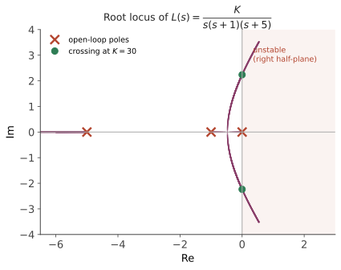

经典 IV · 稳定性与根轨迹
层次：本科核心。 稳定性是控制系统的第一要求——一个不稳定的系统，其他所有指标都没有意义。本页讲两件事：如何在不解高阶方程的情况下判断稳定性（Routh 判据），以及如何直观地看到参数变化如何搬动极点（根轨迹）——后者是经典控制最具几何美感的工具。
一、稳定性的定义与判据
BIBO 稳定：有界输入产生有界输出。对 LTI 系统，等价于：
闭环所有极点位于左半平面（实部严格为负）。
问题是：闭环特征方程 \(1 + L(s) = 0\) 展开后是高阶多项式，五次以上没有求根公式。所以需要不解方程就能判断的办法。
Routh–Hurwitz 判据：把多项式系数排成劳斯表，第一列符号变化的次数 = 右半平面极点的个数。全部同号则稳定。
它的真正价值不在判断具体系统，而在给出参数范围。例如对 \(1 + \dfrac{K}{s(s+1)(s+5)} = 0\)，劳斯判据直接给出稳定条件 \(0 < K < 30\)——这是一个可以直接用于设计的结论：告诉你增益能推到多大。
必要条件（快速筛查）：所有系数同号且非零。不满足则必不稳定，可立即排除。
二、根轨迹：看增益如何搬动极点
根轨迹回答一个设计者最关心的问题：当我调大增益 \(K\)，闭环极点往哪里走？
闭环特征方程 \(1 + K G(s) = 0\)，即 \(G(s) = -1/K\)。当 \(K\) 从 0 变到 ∞，满足该式的 \(s\) 的轨迹就是根轨迹。
几条作图规则（不必死记，但要理解其含义）：
- 起点（\(K=0\)）在开环极点，终点（\(K\to\infty\)）在开环零点或无穷远；
- 分支数 = 开环极点数；
- 实轴上的段：其右侧的开环极点+零点总数为奇数时属于根轨迹；
- 渐近线：\(n-m\) 条，夹角 \(\dfrac{(2k+1)180°}{n-m}\)，交点 \(\sigma_a = \dfrac{\sum p_i - \sum z_j}{n-m}\)；
- 分离点：轨迹离开实轴处（两个实极点相遇后变为共轭复数——系统从过阻尼变为欠阻尼的临界点）；
- 与虚轴的交点：由劳斯判据求得，给出临界增益。

根轨迹的价值：
- 一眼看出稳定的增益范围（轨迹穿越虚轴之处）；
- 看出可达的阻尼比（从原点画等 \(\zeta\) 射线，与轨迹的交点即为可达设计点）；
- 看出补偿器该往哪加：加零点会把轨迹往左拉（改善稳定性与速度），加极点会往右推（恶化）。这直接指导了超前/滞后补偿器的设计。
三、用零极点塑形：补偿器设计
根轨迹给了一个直观的设计法：通过增加零极点，把根轨迹拉到期望的位置。
超前补偿器（lead）：
零点比极点更靠近原点 → 贡献正相位 → 把根轨迹向左拉 → 改善动态响应与稳定裕度。代价是提升高频增益，放大噪声。
滞后补偿器（lag）：\(z > p\)，两者都靠近原点。主要提高低频增益以减小稳态误差，对动态影响小。代价是引入相位滞后，需放在远离穿越频率处。
超前-滞后：兼顾两者，工业上常见。
注意一个概念联系：超前补偿本质上就是比例 + 微分的实用形式（微分被加了高频极点做滤波），滞后补偿近似比例 + 积分。所以 PID 与超前滞后补偿是同一件事的两种表述（第六页）。
四、一个必须警惕的陷阱：零极点对消
设计时容易想到：对象有个讨厌的极点，我就在控制器里放个零点把它对消掉。
这在数学上成立，在工程上危险：
- 对消永远不精确：对象参数会漂移、模型有误差，实际是一个"零极点对"靠得很近而非重合；
- 若被对消的是不稳定极点，结果是灾难：闭环传递函数看起来正常，但系统内部有一个不稳定模态不可控或不可观——它会在初始条件或扰动下发散，而你从输出上看不到征兆，直到系统炸掉。这在状态空间语言里就是"不可镇定"（第七页会正式讲）；
- 右半平面零点同样不能用右半平面极点对消。
铁律：绝不用对消来处理右半平面的极点或零点。 左半平面的对消也应留有裕度，不可依赖精确抵消。
五、Nyquist 判据预告
Routh 判据要求有多项式模型，但实际中我们常常只有频率响应的实测数据（扫频得到的 Bode 图），没有解析模型。Nyquist 判据允许直接从频率响应判断闭环稳定性，且能处理时滞（时滞在频域只是相位滞后，在多项式方法里却是超越函数，无法用 Routh 处理）。
这就是频域方法在工程上占主导地位的原因——它不需要模型，只需要测量。第五页展开。
六、要点
- 稳定 = 所有闭环极点在左半平面；
- Routh 判据给出无需解方程的稳定条件，其价值在于给出参数范围；
- 根轨迹把"调增益"变成可见的几何运动，直接指导补偿器设计；
- 加零点往左拉（改善），加极点往右推（恶化）——超前/滞后补偿的几何直觉；
- 零极点对消是陷阱，尤其绝不能用于右半平面；
- 时滞与无模型场合需要频域方法——下一页的主题。
下一页：频域分析。Bode 图、Nyquist 判据、增益裕度与相位裕度——这是工业界最常用的语言，因为它可以直接从实测数据出发，且能把全课的权衡统一到一张图上。